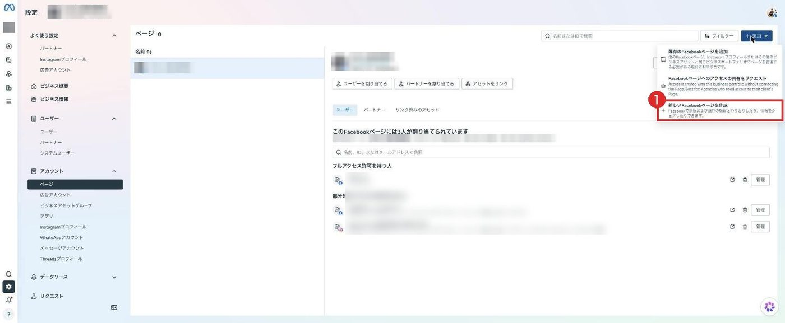
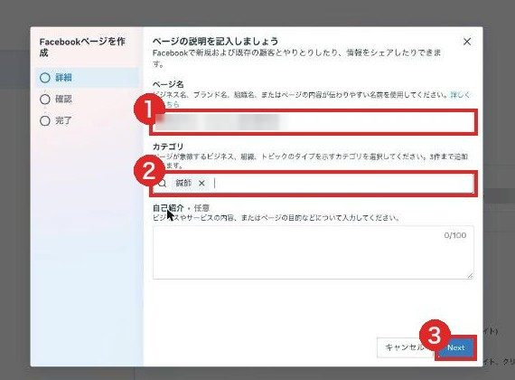
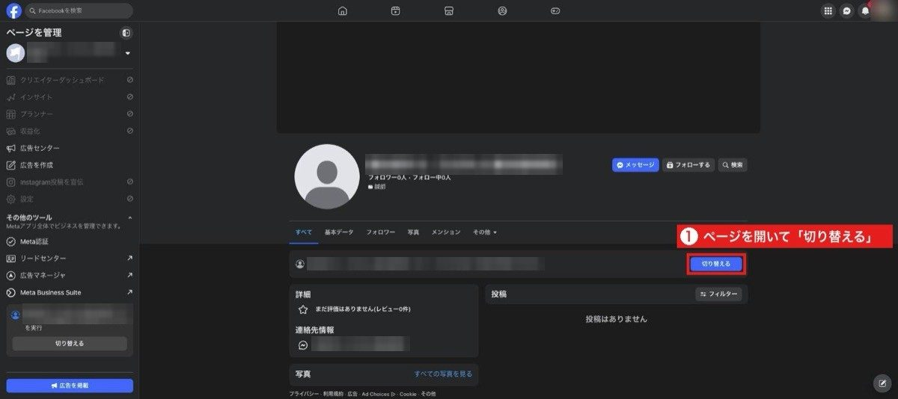
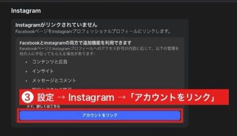
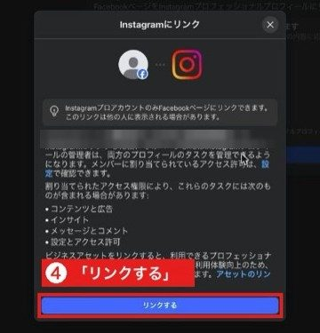
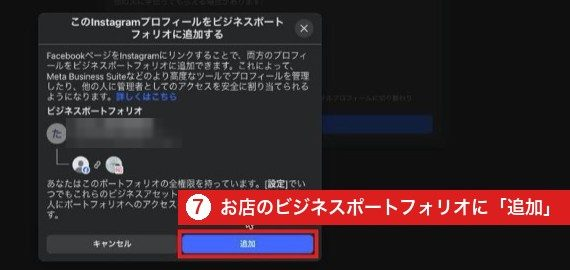
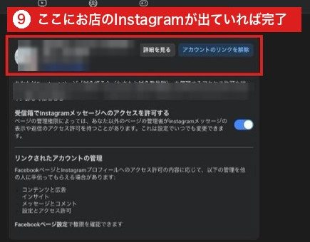
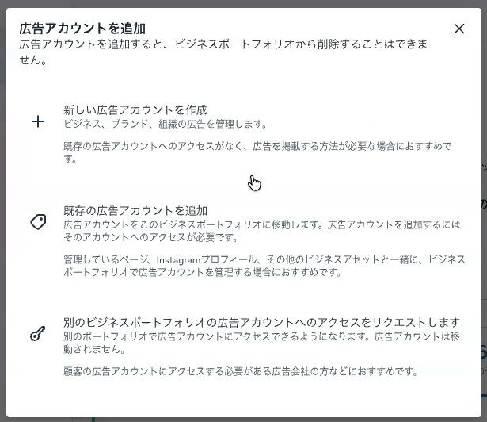
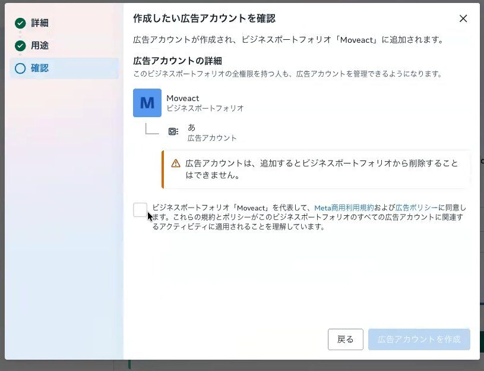
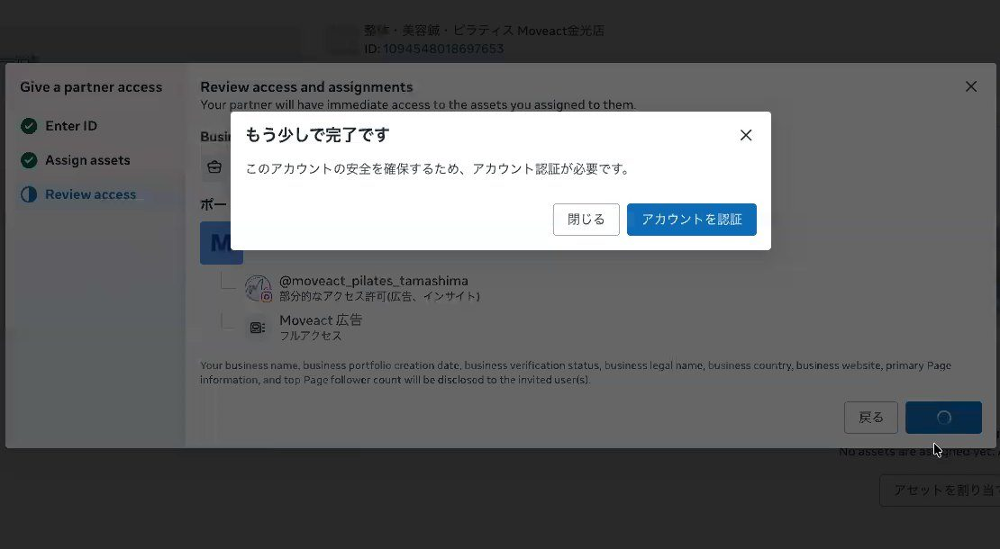

株式会社しっとる Instagram広告運用代行
広告を始める準備（マカセルを使わないお客様用）
Instagram広告の運用代行をご契約いただいたお客様に、Meta（Facebook・Instagram）で株式会社しっとるに「広告を作ってよい」という許可を出していただく手順です。
お店のFacebookページ・Instagram・広告アカウントをそろえ、広告費のカードをご自身で登録し、最後に株式会社しっとるをパートナーに追加します。全部でパソコンで30分〜1時間ほどです。途中でやめても、続きから再開できます。
分からない画面があれば、その画面の写真をLINEで送ってください。Zoomで画面を見ながら一緒に進めることもできます。
はじめる前に
- Facebookにログインできるパソコン（ビジネスの設定はパソコンが必要です）
- お店のInstagramにログインできるスマホ
- 広告費を払うカード（クレジット・デビット）
- Facebook・Instagramのパスワード
- カードの番号（画面共有中は、入れる間だけ共有を止めてください）
- スマホに届く確認の番号（認証コード）
前の会社の管理画面にお店のInstagramや広告アカウントが入ったままだと、手順7で「アセットが割り当てられませんでした」「Instagramアカウントの既存の所有権を削除できませんでした」と出て止まります。先に次をご確認ください。
- Instagram・Facebookの広告や運用を、外部の会社に頼んだことがあるか（会社名と、今も契約中か）
- その会社と、今も連絡が取れるか
- パソコンで
business.facebook.com/latest/settings/instagram_accountを開き、お店のInstagramが出るか（画面の写真をLINEへ） - 出ないときは、前の会社に「御社の管理画面から、うちのInstagram（と広告アカウント）を外してください」とお願いする
前の会社の管理画面の中で作られた広告アカウントは、お店の側に移せません。そのときは手順5で新しく作ります。前の会社と連絡が取れないときは、LINEでご相談ください。
手順1Facebookの個人アカウントを用意する
お客様にお願いします- すでにFacebookにログインできる方は、新しく作らず、今のアカウントを使います。
- 持っていない方だけ、Facebookの「新しいアカウントを作成」から、ご本人の名前で作ります（お店の名前では作れません）。
- ログインのときにスマホに番号が届く設定（二段階認証）をしておくと安心です。
| Facebookアカウント（個人） | Facebookページ | |
|---|---|---|
| 何か | ご本人のもの。ログインに使う | お店の看板 |
| 数 | 1人1つ | アカウントを持つ人が作る。いくつでも作れる |
| 広告に出るか | 出ません | 広告の名義として出ます |
Facebookは1人1つの決まりです。新しく作ったアカウントは制限がかかりやすく、広告の設定で止まることがあるため、今お持ちのものを使ってください。
手順2ビジネスポートフォリオを1つに決める
お客様にお願いします（Zoomで一緒に進められます）- パソコンで
business.facebook.com/settingsを開き、手順1のアカウントでログインします。 - 左上の名前を押すと、入っているビジネスポートフォリオの一覧が出ます。お店のものがあれば、それを使います。
- 以降の手順はすべて、左上がお店の名前になっている状態で進めます。
- すぐに新しく作りません。1人が作れるのは2つまでです。
- ページ・Instagram・広告アカウントが何もつながっていない空のものがあれば、それを使い、「ビジネス情報」で名前をお店の名前に変えます。
- 覚えのないものは、Instagramをプロアカウントにしたときに自動でできていることがあります。
- 本当に無いときは「ビジネスポートフォリオを作成」で作ります。名前は会社名か屋号にします（記号は使えません）。
手順3Facebookページを確かめる（無ければ作る）
お客様にお願いします（Zoomで一緒に進められます）広告はFacebookページを名義にして作ります。ページが無いと、作れる広告が限られます。ページへの投稿は要りません。
- 左のメニューの「アカウント」→「ページ」に、お店のページが出ていれば、そのままで大丈夫です。
- 無いときは、右上の「＋追加」→「新しいFacebookページを作成」で作ります（下の画面の番号の順）。ページ名はお店の名前、カテゴリは業種です。写真や紹介文はあとからで大丈夫です。





画面は実際のものです（他のお店の名前・金額はぼかしています）。
手順4InstagramをFacebookページにつなぐ
お客様にお願いします（Zoomで一緒に進められます）- スマホのInstagramアプリで、お店のアカウントをプロアカウントにします（設定 →「アカウントの種類とツール」→「プロアカウントに切り替える」。無料で、投稿やフォロワーはそのままです）。すでにプロアカウントなら何もしません。
- パソコンのFacebookで、お店のページを開いて「切り替える」を押します。
- 「設定とプライバシー」→「設定」→「Instagram」→「アカウントをリンク」を押し、画面の案内どおり進めます。
- Instagramのユーザーネームとパスワードは、ご本人が入れます。
- 1つのページにつなげるInstagramは1つだけです。
- Facebookの「アカウントセンター」の「アカウントを追加」は、個人のアカウント同士をまとめる別の場所です。ここで追加しても、ページにはつながりません。
- ビジネス設定の「Instagramプロフィール」に追加しただけでも、ページにはつながりません。








スマホのInstagramアプリで「プロフィールを編集」を開き、お店のページの名前が出ていれば、つながっています。ビジネス設定の「Instagramプロフィール」にも、お店のInstagramが出ます。

決まった順で外してから、つなぎ直します。①今つながっているページとのリンクを解除する（Instagramアプリの「プロフィールを編集」→「ページ」） ②入っているポートフォリオからInstagramを削除する ③上の手順でお店のページにつなぐ。外しても投稿やフォロワーは消えません。前の会社の管理画面に入っている場合は、外す前にLINEでご相談ください。
画面は実際のものです（他のお店の名前・金額はぼかしています）。
手順5広告アカウントを確かめる（無ければ作る）
お客様にお願いします（Zoomで一緒に進められます）- 左のメニューの「広告アカウント」に、お店の広告アカウントがあるか見ます。あれば手順6へ。
- 無いときは「＋追加」→「新しい広告アカウントを作成」。次のとおりに入れます。
| 欄 | 入れるもの |
|---|---|
| 広告アカウント名 | 店舗名_地域_Meta広告（例：さくら整骨院_倉敷市_Meta広告） |
| 時間帯 | Asia/Tokyo（最初はロサンゼルスになっています。欄を押して「T」と打つと出ます） |
| 通貨 | JPY（日本円）（最初は米ドルになっています。欄を押して「J」と打つと出ます） |
変えると新しい広告アカウントになり、元のアカウントは閉じられます。新しいポートフォリオでは、広告アカウントは最初1つしか作れません。「広告アカウントを作成」を押す前に、名前・時間帯・通貨をもう一度確かめてください。
「次へ」→ 使う人は「自分のビジネス」→「次へ」→ 確認の画面でチェックを入れて「広告アカウントを作成」。




手順6広告費のお支払い方法を登録する
お客様にお願いします- 左のメニューの下のほうの「請求と支払い」を押し、お店の広告アカウントを選びます。
- 「支払い方法を追加」→ カードを登録します。カード会社の本人確認が出たら、最後まで進めます。
- 「支払い方法」にカードが出て、広告アカウントが「有効」になれば完了です。
しっとるがお聞きしたり、代わりに入れたりすることはありません。Zoomで画面を共有しているときは、番号を入れる間だけ共有を止めて、入れ終わってから再開してください。広告費はこのカードからMetaへ直接お支払いいただきます。

画面は実際のものです（他のお店の名前・金額はぼかしています）。
手順7株式会社しっとるをパートナーに追加する
お客様にお願いしますお店のページ・Instagram・広告アカウントの持ち主は、お店のままです。契約が終わったら、同じ画面からいつでも外せます。
business.facebook.com/settingsに戻り、左上がお店の名前になっているか確かめます。- 左のメニューの「ユーザー」→「パートナー」→ 右上の「＋追加」→「パートナーにアセットへのアクセスを許可」を選びます（「…アクセスをリクエスト」は選びません）。
- 「パートナーのビジネスIDを入力」に、次の番号を貼り付けて「次へ」。
3286784271457726
株式会社しっとるのビジネスIDです（どのお店でも同じ番号です）。
- 左の「アセットタイプを選択」で次の3つを順に選び、お店のものにチェックを入れて、右のスイッチをオンにします。
| 選ぶもの | オンにするもの |
|---|---|
| 広告アカウント | いちばん下のフルアクセス「広告アカウントの管理」 |
| Facebookページ | 「広告」「コンテンツ」「インサイト」 |
| Instagramアカウント | 「広告」「コンテンツ」「インサイト」 |
- 「メッセージ」「コミュニティアクティビティ」など、ほかはオンにしません。ボタンが「保存」と出ていても「次へ」で進みます。
- 確認の画面で「Confirm」。「もう少しで完了です」と出たら「アカウントを認証」を押し、案内どおりに進めます。




やり直す必要はありません。「パートナー」→ 株式会社しっとる → 右上の「アセットを割り当てる」で、足りない分を選んで「広告」「コンテンツ」「インサイト」をオンにすれば足せます。

お店が2つ以上あるとき
手順7でページやInstagramが何個も出てきたら、次の決まりで選びます。
| こんなとき | 選ぶもの |
|---|---|
| 広告アカウントが店ごとに分かれている | 広告を出す店の広告アカウントを全部（それぞれ「広告アカウントの管理」） |
| 1つの広告アカウントを2店で使っている | その広告アカウント1つだけ |
| 店ごとのFacebookページ・Instagram | 広告を出す店の分を全部（それぞれ「広告」「コンテンツ」「インサイト」） |
| Instagramがつながっていない、店名の無い本体のページ | 選ばなくて大丈夫（その名前の広告を続けたいときは、しっとるからご案内します） |
| 閉めた店・使っていないページや広告アカウント | 選びません |
迷ったら、出てきた一覧の画面の写真をLINEで送ってください。
終わったら
お客様の作業は、ここまでですグループLINEで「権限を渡しました」と一言お送りください。
- 受け取った許可を、しっとるの担当に割り当てる
- 広告費のカードが「有効」になっているか確かめる
- ページ・Instagram・広告アカウントが正しくつながっているか点検する
- 広告アカウントの名前を整える必要があるときは、ご了解をいただいてから直す
- Facebookの個人アカウントでログインできる
- 使うビジネスポートフォリオが1つに決まっている
- お店のFacebookページがある
- Instagramの「プロフィールを編集」に、お店のページの名前が出ている
- 広告アカウント（Asia/Tokyo・日本円）がある
- カードが登録され、「有効」になっている
- パートナーに株式会社しっとるが出ていて、広告アカウント・ページ・Instagramの3つを渡している
うまくいかないとき
| 出たこと | 考えられること | すること |
|---|---|---|
| 「アセットが割り当てられませんでした」「既存の所有権を削除できませんでした」 | 別の会社の管理画面に入ったまま。またはページ・Instagram・広告アカウントが別々のポートフォリオに入っている | 「はじめる前に」を確かめ、画面の写真をLINEへ |
| Instagramを追加できない | 別のページやポートフォリオにつながったまま | 手順4の「別のページやポートフォリオにつながっていたとき」 |
| カードが登録できない | 本人確認が終わっていない。ネット決済や海外利用が止められている | カード会社に確認。続けて失敗したら24〜48時間あけて再度 |
| 本人確認・コードを求められた | Metaの安全確認 | 画面の案内どおりに、ご本人が進める |
| 名前やボタンが違う | Metaの画面の言葉は、ときどき変わります | 押す前に画面の写真をLINEへ。押す場所を文字でお返しします |
しっとるが、お客様の代わりにログインしたり、パスワードやカード番号をお聞きしたりすることはありません。